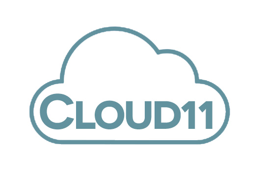

To continue the development of the Role Marker Program and the suite of education products, Cloud 11 will look to recruit a Full-Stack Developer, Cyber Security Analyst, Cloud Engineer and a Liaison Officer – Government Relations.

Position Details
Position Title: Full-Stack Developer Position Number: 00001 Location: Remote Employment Type: 6 Month Fixed Term, Full-Time
Cloud 11 is a fast-growing development agency with a head office based in Melbourne, Australia, and staff working remotely across Australia. Founded in 2022 the agency specialises in web, mobile app, and custom software development in the education sector.
Position Summary
The Full Stack Developer will work in a fast paced technology-enabled start-up. The role will be instrumental in developing digital tools to empower thousands of teachers by reducing their administrative burden. The position will contribute to all technical aspects of Cloud 11’s strategy, product development and system operation, providing excellence in administrative service delivery in the education sector for the Australian Government Department of Education and Training.
The role will be responsible for gathering user requirements, defining system functionality, writing code in various languages in our stack Python and the framework Django, developing efficient and robust systems that collect and present sensitive student data; building high-quality, innovative, and fully performing software that complies with coding standards and technical design to supplement an existing suite of education industry products. The role will also build and enhance the Cloud 11 software development way of working, creating software engineering standards, driving continuous improvement of our software systems and fostering an innovative entrepreneurial culture.
Reporting Line
Chief Technology Officer
Organisational Accountabilities
Cloud 11 is committed to the health, safety and wellbeing of our staff. Cloud 11 and our staff are required to comply with statutory policy and procedures including equal opportunity, occupational health and safety, privacy and trade practice as well as Cloud 11’s Code of Conduct. Our staff are accountable for completing training and ensuring their knowledge is up to date.
Key Responsibilities
Produce specifications and determine operational feasibility.
Integrate software components into a fully functional software system.
Develop software verification plans and quality assurance procedures.
Document and maintain software functionality.
Communicate and collaborate with the development team.
Troubleshoot, debug and upgrade existing systems.
Deploy programs and evaluate user feedback.
Comply with project plans and industry standards.
Ensure software is updated with latest features.
Key Selection Criteria
Experience as a Full Stack Developer or Software Developer.
Experience in building interactive web and mobile applications using the Django framework.
Skills in using Python.
Excellent knowledge of relational databases and MySQL.
Experience in Cloud Functions and serverless systems.
Ability to document requirements and specifications.
Ability to think both analytically and creatively to resolve challenges in a complex environment.
Ability to build strong and influential stakeholder relationships.
Ability to develop solutions with the customer in mind.
Position Title: Cyber Security Analyst Position Number: 00002 Location: Remote Employment Type: 6 Month Fixed Term, Full-Time
Cloud 11 is a fast-growing development agency with a head office based in Melbourne, Australia, and staff working remotely across Australia. Founded in 2022 the agency specialises in web, mobile app, and custom software development in the education sector.
Position Summary
The Cyber Security Analyst will work providing technical subject matter expertise (SME) to establish and maintain the Cloud 11 Cyber Security framework. The role spans across all aspects of Cyber Security from consulting and advising our development team, maintaining process and policies, and monitoring and acting on security incidents. You will be part of a team that proactively prepares to detect, respond to and recover from cyber-attacks as we strive to provide excellence in administrative service delivery in the education sector for the Australian Government Department of Education and Training.
Reporting Line
Chief Technology Officer
Organisational Accountabilities
Cloud 11 is committed to the health, safety and wellbeing of our staff. Cloud 11 and our staff are required to comply with statutory policy and procedures including equal opportunity, occupational health and safety, privacy and trade practice as well as Cloud 11’s Code of Conduct. Our staff are accountable for completing training and ensuring their knowledge is up to date.
Key Responsibilities
Contribute to security risk assessments.
Review security reports and mitigate security threats.
Contribute to disaster recovery and contingency plans in event of security breaches.
Contribute to management of security technologies (endpoint protection, email, mobile device management).
Liaise with Government stakeholders and act on infrastructure security mitigations detected.
Communicate and collaborate with the development team.
Coordinate the IT service desk to mitigate findings in vulnerability and penetration tests and for any announced security patch updates.
Monitor and respond to Phishing emails and other threats.
Generate reports for technical and non-technical stakeholders.
Manage regular penetration tests, vulnerability assessments, and potential hackathons.
Key Selection Criteria
Demonstrated understanding of IT security policies/security awareness.
Expertise in implementing Cyber Security Frameworks and controls.
Experience in various security products and tools.
Writing reviewing and implementing security policies.
Strong and current knowledge of security trends and emerging threats.
Ability to think both analytically and creatively to resolve challenges in a complex environment.
Ability to build strong and influential stakeholder relationships.
Ability to develop solutions with the customer in mind.
Position Title: Cloud Engineer Position Number: 00003 Location: Remote Employment Type: 6 Month Fixed Term, Full-Time
Cloud 11 is a fast-growing development agency with a head office based in Melbourne, Australia, and staff working remotely across Australia. Founded in 2022 the agency specialises in web, mobile app, and custom software development in the education sector.
Position Summary
The Cloud Engineer will work building and developing cloud technical skills, assisting with the migration of applications and infrastructure to the cloud and assisting in monitoring, enhancing and monitoring the environments to ensure maximum value. The role will engage in disaster recovery planning, capacity engineering, reliability improvement initiatives, configuration management and platform automation and will be responsible for providing on-going support of hosted applications and infrastructure. The position will collaborate with our development team as we strive to provide excellence in administrative service delivery in the education sector for the Australian Government Department of Education and Training.
Reporting Line
Chief Technology Officer
Organisational Accountabilities
Cloud 11 is committed to the health, safety and wellbeing of our staff. Cloud 11 and our staff are required to comply with statutory policy and procedures including equal opportunity, occupational health and safety, privacy and trade practice as well as Cloud 11’s Code of Conduct. Our staff are accountable for completing training and ensuring their knowledge is up to date.
Key Responsibilities
Collaborating with development team to evaluate and identify optimal cloud solutions.
Modifying and improving existing systems.
Educating staff on the implementation of new cloud technologies and initiatives.
Designing, developing and deploying modular cloud-based systems.
Developing and maintaining cloud solutions in accordance with best practices.
Ensuring efficient functioning of data storage and processing functions in accordance with security policies and best practices in cloud security.
Identifying, analysing, and resolving infrastructure vulnerabilities and application deployment issues.
Regularly reviewing existing systems and making recommendations for improvements.
Interacting with clients, providing cloud support, and making recommendations based on client needs.
Key Selection Criteria
Experience and understanding across a range of cloud products.
Experience across hands-on technical / engineering roles.
Management and maintenance of cloud environments.
Designing and implementing various types of cloud solutions.
Ability to document requirements and specifications.
Ability to think both analytically and creatively to resolve challenges in a complex environment.
Ability to build strong and influential stakeholder relationships.
Ability to develop solutions with the customer in mind.
Position Title: Liaison Officer – Government Relations Position Number: 00004 Location: Remote Employment Type: 6 Month Fixed Term, Full-Time
Cloud 11 is a fast-growing development agency with a head office based in Melbourne, Australia, and staff working remotely across Australia. Founded in 2022 the agency specialises in web, mobile app, and custom software development in the education sector.
Position Summary
The Liaison Officer – Government Relations will work with Government stakeholders, schools and our development team as we strive to provide excellence in administrative service delivery in the education sector for the Australian Government Department of Education and Training. This role will include providing advice, coordination of responses, liaison with specialist services as well as working to embed systematic approaches and integrated processes at Cloud 11.
Reporting Line
Chief Technology Officer
Organisational Accountabilities
Cloud 11 is committed to the health, safety and wellbeing of our staff. Cloud 11 and our staff are required to comply with statutory policy and procedures including equal opportunity, occupational health and safety, privacy and trade practice as well as Cloud 11’s Code of Conduct. Our staff are accountable for completing training and ensuring their knowledge is up to date.
Key Responsibilities
Liaise with government stakeholders establishing communication between various educational organisations and the development team.
Research and prepare reports, briefing notes, memoranda, correspondence and other routine documents to help facilitate communication.
Maintains confidential files and documents and attend meetings.
Process incoming and outgoing mail, file correspondence and maintain records.
Key Selection Criteria
Experience as a government liaison officer specialist knowledge in the area of education.
A good understanding of privacy legislation.
Project management experience.
Strong communication and report writing skills.
Ability to think both analytically and creatively to resolve challenges in a complex environment.
Ability to build strong and influential stakeholder relationships.
Ability to develop solutions with the customer in mind.